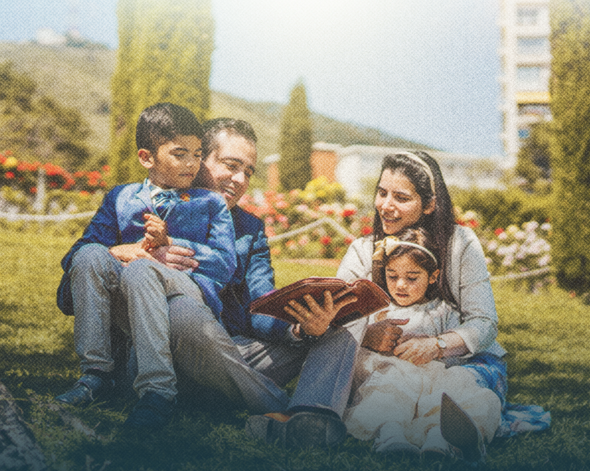

Apertura
- Tarde

Durante cuatro días el Palacio de los Deportes se llena de familias venidas de toda Europa: alabanza, predicación de la Palabra y tiempo para lo que más importa, los tuyos.
No importa dónde estés hoy. Ven tal como eres, y trae contigo a quien quieras invitar.
«Y cordón de tres dobleces no se rompe pronto.» Eclesiastés 4:12


Del jueves 6 al domingo 9 de agosto de 2026. La entrada es libre en todos los servicios, sin inscripción.
Apertura
La familia
La juventud
Clausura
Viernes y sábado hay dos servicios: la tarde queda libre de 14:00 a 18:30 para comer y descansar en la ciudad.
Oficiales internacionales del Movimiento Misionero Mundial, ministrando los cuatro días.


El recinto, cómo llegar a Oviedo y qué hacer entre servicio y servicio.
 C/ Río Caudal, s/n 33010 Oviedo, Asturias
C/ Río Caudal, s/n 33010 Oviedo, Asturias
Aforo para más de 5.000 personas. En bus urbano, la línea E de TUA para en Río Caudal, a 70 metros de la puerta; la línea H queda a 350. Hay 8 plazas reservadas para personas con movilidad reducida.
Una obra que nació en 1963 en Puerto Rico, de la mano del Rev. Luis M. Ortiz, y que hoy está presente en más de 80 países de los cinco continentes. Somos una iglesia cristiana evangélica pentecostal, con la familia en el centro de la misión.
En 2026 los bloques de Europa celebran sus convenciones en Alemania, Londres, Suiza e Italia. La del Bloque A es esta: Oviedo, del 6 al 9 de agosto.
Familias que ya vivieron el cambio. La tuya puede ser la próxima.


No necesitas entrada ni inscripción. Solo tráete a los tuyos, del 6 al 9 de agosto, al Palacio de los Deportes de Oviedo.